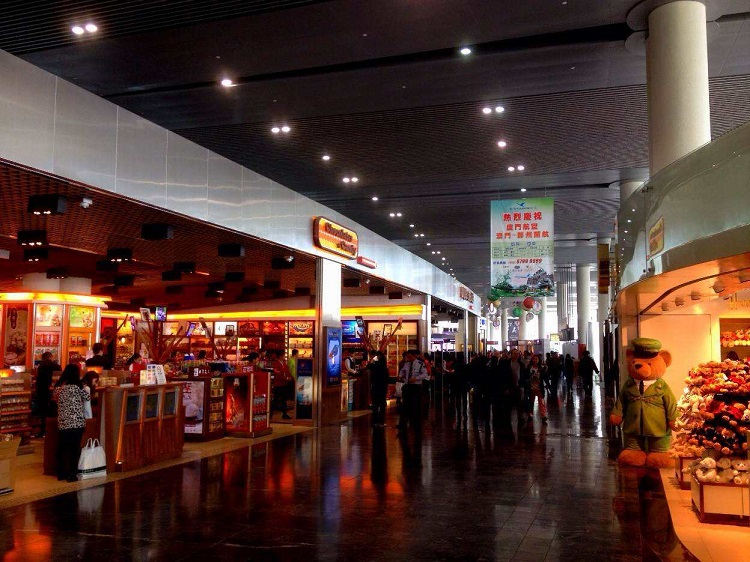

坐飛機到澳門
中國各城市直飛澳門的航班非常頻繁，除直飛航班外，亦有不少價格優惠的轉機航班可供選擇。
目前國內直飛至澳門的城市有武漢，北京，成都，合肥，南京、南寧、上海虹橋、上海浦東、杭州、廈門，天津，晉江，深圳，重慶，武漢，香港，台北，三亞，寧波，廣州等。
航空公司包括廈門航空、澳門航空、南方航空、東方航空、中國國航、深圳航空、春秋航空、吉祥航空、海南航空、廈門航空、長榮航空等。
澳門國際機場
地址：澳門氹仔島偉龍馬路
查詢電話：853-28861111
網站：http://www.macau-airport.com

圖：澳門國際機場
澳門國際機場相關提示
#免費旅遊地圖和路線查詢#
在出機場海關時，在兩旁的小架子上會有免費旅遊地圖可以拿，若是沒看到，則出海關後向左走會有官方旅遊諮詢中心，這邊也能拿到，一些搭車問題都可以詢問諮詢中心的服務員。澳門可以簡單的區分成：澳門本島與氹仔島兩部分。一定要記住港澳碼頭（本島：轉穿梭巴士的地方）、澳門機場（氹仔島：回家的地方）這兩個地方。
#行李寄存#
澳門國際機場客運大樓離境層設有行李存放服務， 二十四小時運作， 按小時計算：每件澳門幣10.00 按日計算（24小時）：每件澳門幣80.00，行李打帶服務每條澳門幣10.00。
存放不足一小時亦作一小時計算，存放任何24小時內可按小時或按日計算，所需費用以較低者為準。
包裝箱
小紙箱：每個澳門幣20.00 （30.5 x 30.5 x 30.5 厘米）
大紙箱：每個澳門幣30.00 （30.5 x 30.5 x 45.7 厘米）
澳門國際機場往返交通指引
#免費穿梭巴士#
由機場前往市區及酒店最方便的方法就是乘坐各酒店提供的免費穿梭巴士。穿梭巴士等候區位於北面停車場， 服務時間為每天11：00-21：00，每15-20分鐘一班。各大酒店均有接機服務，可提前預訂或抵達時再作安排
#公共巴士#
機場至市區：澳門有大型公共汽車和小型公共汽車行駛在澳門市區、氹仔和路環之間，班次頻密；各車站均有用中、葡文說明、介紹各公共汽車的行走路線牌。在澳門市區乘坐公共汽車每位澳門幣3.2元，往氹仔4.2元，往路環5元，往黑沙海灘6.4元，往澳門國際機場4.2元。
乘客上車前，自備硬幣，車上不設找換。所有公共汽車均備空調。公共汽車行駛時間分別由早上6：00至晚上24：00。
往返澳門半島和氹仔島之間：11、22、28A、30、33和34號；
往返澳門、氹仔和路環間：21、21A、25、26和26A號
市區至機場：每位澳門幣3.2元，往氹仔4.2元，往路環5元，往黑沙海灘6.4元，往澳門國際機場4.2元。乘客上車前，自備硬幣，車上不設找換。所有公共汽車均備空調。公共汽車行駛時間分別由早上6：00至晚上24：00。
到機場：AP1、MT1、MT2、N2、21、26和36號；
#出租車#
澳門的出租是黑色車身奶白色車頂，並在車頂安裝有“的士”字樣標誌。出租車起程價（首1600米）收費澳門幣17元，之後每260米加收2元，中途停車收費每1分鐘2元，如有大件行李，每件加收3元。
從澳門往路環或在澳門國際機場的士候客區乘車，除了車資外，另收附加費5元；氹仔往路環加收2元附加費。另外，澳門還有“電召的士”，其收費方法與出租車相同。
電召的士電話：0853-28519519
#自行車#
如果想以輕鬆悠閒的方式漫遊澳門，騎自行車是一個好選擇，適合喜歡運動又愛漫遊的人。在離島氹仔市區可租賃自行車。需要注意的是，在連接澳門和氹仔的大橋上是禁止騎自行車的
坐船到澳門
除了航空飛行，亦可在珠海、深圳、香港等港口搭乘遊輪到達澳門。

圖：碼頭
#新港澳碼頭#
地址：澳門新口岸填海區海港前地
查詢電話： 00853-87907039
前往方式：AP1路環線、12路、1A路、17路環線、28C路、2A路、2路、6路環線等
#氹仔碼頭#
位置：澳門氹仔新填海區
前往方式：26路線、36路線、AP1路線、MT1路線、MT2路線；有開往澳門半島、氹仔及路氹各大酒店及娛樂場的免費穿梭巴士
從珠海口岸過關
#拱北口岸#
位置：於珠海市東南部，毗鄰澳門
拱北口岸過關後就是澳門市區，但周末及節假日人流量非常大，有時需要排隊2-3小時，拱北口岸開關時間是早6點至晚1點鐘。兩側新廳開放時間：出境6：50-12：00；入境16：00-21：00
遊客可通過以下途徑實時了解拱北口岸的出入境情況：
1、關注“拱北邊檢”微信公眾號，通過點擊底部便民服務-通關視頻，查看口岸通關實時視頻。
2、關注珠海交通文藝廣播電台（FM87.5兆赫）：每日上午10時、11時、12時整點，逢週六、週日及重大節假日期間下午加播通關信息；
3、羊城交通文藝廣播電台（FM105.2兆赫）：逢週六、週日上午10時至12時間播報通關動態；。
4、進入珠海出入境邊防檢查總站主頁查看通關信息欄。
拱北口岸服務熱線：0756-8167000
#橫琴口岸#
位置：經過蓮花大橋與澳門的蓮花口岸相連
如果你想去威尼斯人、氹仔、路環或澳門機場等地，走橫琴口岸是最方便的，拱北口岸下面負2層的岐關車站，有穿梭巴士可以到橫琴口岸，5元/人。雖然從拱北口岸到橫琴口岸需要花十幾分鐘時間，但是橫琴口岸人較少，大大節省了通關時間。
橫琴口岸服務熱線：0756-8167580，0756-8167582
#灣仔口岸#
灣仔口岸已經於2016年1月暫時停止使用，恢復正常使用時間待定。